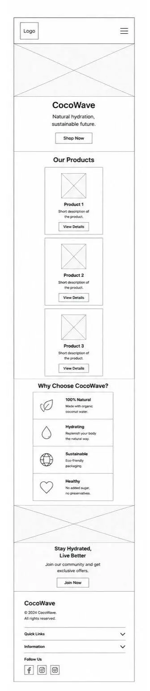
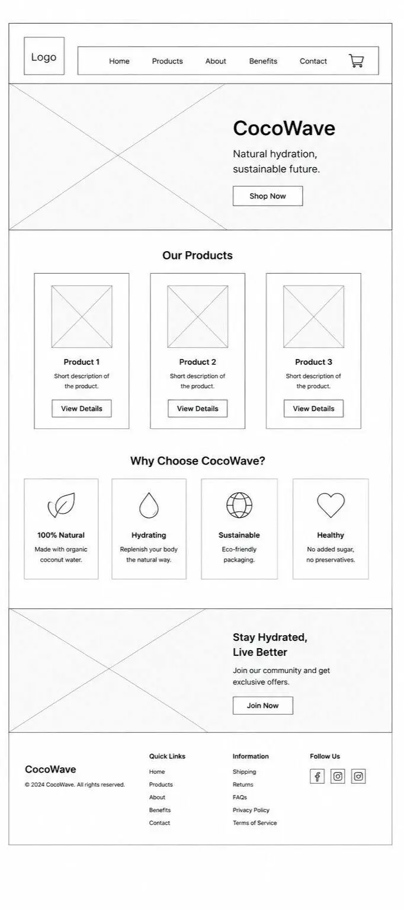

1. Site Name
CocoWave is the brand name and domain identity for this project. The name combines Coco (short for coconut) with Wave, evoking the tropical ocean lifestyle and the natural, refreshing quality of coconut water. The word "wave" also hints at momentum — riding a trend toward healthier, functional beverages.
Optional domain:
cocowave.com / cocowave.co
The name is short, memorable, easy to spell, and works across social media handles and product packaging.
2. Site Purpose
CocoWave's website serves as the digital home for a premium coconut water brand. The site will:
- Introduce visitors to the CocoWave product lineup — flavors, sizes, and packs.
- Educate consumers on the evidence-based health benefits of natural coconut water.
- Communicate the brand's commitment to sustainable sourcing and eco-friendly packaging.
- Provide a direct contact channel for retail inquiries, wholesale requests, and customer support.
The target audience is health-conscious adults aged 18–40 who are looking for a clean, natural alternative to sugary sports drinks.
3. Scenarios
The following questions represent typical visitors browsing the CocoWave website and drive the content decisions for each page:
-
"What makes CocoWave different from other coconut water brands in the store?"
→ Answered by the Home and Products pages — highlighting premium sourcing, no added sugar, and non-concentrate processing. -
"Is coconut water actually good for hydration and electrolyte recovery after exercise?"
→ Answered by the Health Benefits page — backed by nutritional data and comparison with sports drinks. -
"How can I order CocoWave in bulk for my café or gym?"
→ Answered by the Contact page — wholesale inquiry form and distributor information. -
"What steps does CocoWave take to protect the environment?"
→ Answered by the Sustainability page — covering packaging materials, farmer partnerships, and carbon footprint goals.
4. Color Schema
The palette draws from the coconut's natural environment: deep tropical greens, warm golden amber, and a clean cream base. All foreground–background pairings meet WCAG AA contrast standards.
#0B6E4F
Headings, nav bg, accents
#F4A520
Highlights, buttons, tags
#F9F4EC
Page background
#1C2B22
Body text, paragraphs
#5A7367
Captions, labels, metadata
Contrast checked: Deep Green on Cream = 7.4:1 ✓ | Forest Night on Cream = 12.1:1 ✓ | Amber on Deep Green = 5.6:1 ✓
5. Typography
Two Google Fonts are used to balance personality with readability:
Ride the Natural Wave.
Used for: <h1>, <h2>, <h3>, logo name, hero headline
CocoWave coconut water is harvested from young green coconuts within 24 hours of picking, preserving every natural electrolyte exactly as nature intended.
Used for: <p>, <nav>, buttons, labels, captions, form fields
Both fonts are loaded via Google Fonts CDN. Maximum two typefaces keeps load time lean and visual consistency high.
Logo
The CocoWave logo uses a stylized coconut icon — three dots (representing the coconut's "face") inside an oval, with a wave line beneath it and a leaf/straw element above. The mark is set in Deep Green on a circular field with an Amber border ring.
Recommended logo file formats to export:
logo.svg— scalable, for web uselogo.png— transparent background, 512×512 px minimumlogo-white.svg— reversed version for dark backgrounds
📎 Free logo tools: Canva Logo Maker · Looka · Free Logo Design
Site Map
6. Wireframes
Layout plans for the Home page shown in both mobile and desktop views.
Wireframes below are placeholders — replace the src values with your exported
wireframe images.
📎 Free wireframe tools: Figma · Balsamiq · wireframe.cc
📱 Mobile View

Single column • stacked hero, product cards, CTA button
🖥️ Desktop View

Two-column hero • grid of 3 product cards • full-width wave banner
Home Page Layout Description
Mobile: Stacked single-column layout. Top: logo + hamburger nav. Hero section with headline "Ride the Natural Wave" and a CTA button. Below: two featured product cards (full width), a short "Why CocoWave?" blurb, and a footer with social links.
Desktop: Sticky top navigation bar (full logo + horizontal nav). Hero splits into a left text column (headline, subhead, CTA) and a right product image. Below: a 3-column product grid, then a full-width green wave banner with a health-benefits teaser, and a 4-column footer.